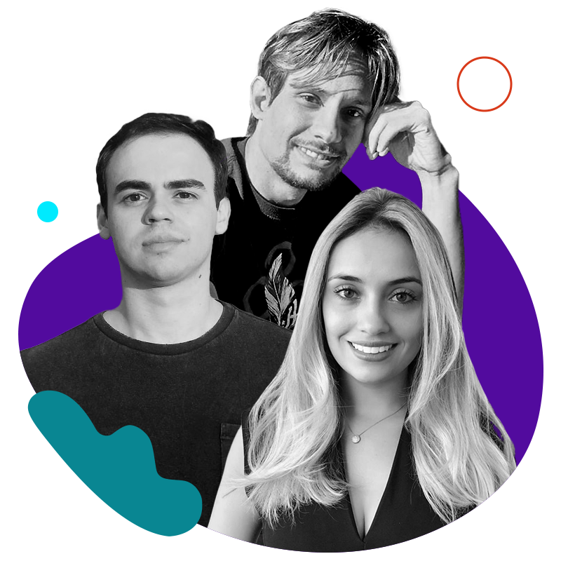
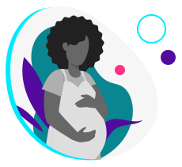

Para aumentar o fluxo de capital para startups com liderança
feminina, é importante ter mais representatividade no
outro lado da mesa. Qual é o perfil das mulheres
investidoras? O que elas buscam em uma startup?
Ao lado de outras profissionais que exercem essa função,
nossa CEO, Lícia Souza, participou da Mansão das Empreendedoras, evento
promovido pela Rede Mulher Empreendedora em SP. O papo
foi sobre investimentos, oportunidades e desafios
para mulheres em startups (ficou tudo
gravado, clica na imagem acima pra
assistir!)
Elas deram dicas de como se preparar para esse momento, e
frisaram que há diferentes tipos de investidores, que podem
ter mais ou menos sinergia com seus valores e planos para
sua startup, ter mais ou menos a oferecer em conhecimento e
envolvimento no negócio.
Captar recursos deve ser uma via de mão dupla: a startup
também precisa avaliar quem quer trazer para o quadro
societário. E para facilitar, aqui vai o Mapa do Ecossistema
de Apoio às Mulheres Brasileiras, também criado pela RME.
Que tal dar um zoom na categoria Aceleração de Startups e
Investimento e partir para a ação?
Está aproveitando a leitura?
Que tal compartilhar essa edição da WE Impact News com
outras empreendedoras e empreendedores da sua rede de
contatos? 😉
#WIN – WE Impact Network
1 ano depois da primeira captação... o que mudou?

Bruno Pereira, Lucas Leite e Gabriela Lea, cofundadores da
Unbox
A Unbox, primeira e mais completa solução de
e-commerce para pequenos e médios lojistas do
Brasil, passou pelos desafios da captação e se tornou uma
#investidaWEImpact (participamos da rodada de R$ 3,5
mi da retailtech junto com outras grandes
investidoras) há exatamente UM ANO! UHUU!
Para comemorar, fizemos uma breve retrospectiva da
trajetória da startup em uma entrevista super bacana com
dois dos cofundadores: Gabriela Lea, COO, e o CEO Bruno
Pereira. Eles também contaram uma super novidade da
plataforma e como ela funciona, dando uma importante
lição sobre como é fundamental estar atenta às tendências
do mercado e agir rápido para gerar valor aos
clientes.
#DiversidadenaPrática
Tecnologia e parto humanizado

Não é raro que uma dor pessoal transforme profissionais em
empreendedores. Lettycia Vidal criou uma plataforma que
conecta famílias a profissionais de saúde com condutas de
pré-natal, parto e pós parto humanizados após ouvir os
relatos de violência obstétrica de sua própria mãe.
Uma em cada 4 mulheres já passaram por episódios
desse tipo aqui no Brasil, vivendo uma realidade bastante
invisibilizada – e sobre a qual pouca gente fala. Atendendo
a esse público, a fundadora da Gestar mostra que
#diversidadenaprática também é sobre enxergar grupos
que não costumam ser vistos como potenciais públicos
alvo.
#DicadaCEO
“Não existe fórmula pronta nem uma estratégia de
vendas que seja bala de prata. O importante é
entender sua operação e montar o quebra cabeça que
melhor se adequa para criar o modelo de vendas da sua
startup.
Todas as opções podem conviver bem umas com as outras, desde
que o processo seja sempre pensado em equilibrar a melhor
experiência para o cliente, dentro da maior
lucratividade para a empresa.”
- Nara Vaz Guimarães, fundadora e CEO da Plural Sales,
em artigo sobre modelo de vendas para o blog WE Impact.
Leia clicando aqui!
#ElasImpactam
Workshop: dicas para vender mais
E por falar em vendas... No dia 21 de junho, às 17h,
o fundo WE Ventures, nosso parceiro, promove um workshop
online no Microsoft Reactor sobre esse tema.
Se seu produto é bom, ele se venderá sozinho? Isso não é
sempre verdade! Adicionalmente, mulheres enfrentam desafios
únicos na hora de vender.
Como podemos enfrentar esses obstáculos? Patricia
Moraes, sócia fundadora da Unbox Capital e
Priscyla Laham, diretora de vendas da Microsoft,
prometem te contar.
Se você quer aprender como startups podem aprimorar sua
máquina de vendas, inscreva-se!
#NaMídia
WI no Gaúcha Mais
Diretamente de Porto Alegre, nesta edição, compartilhamos a
entrevista da nossa CEO, Lícia Souza, para a Rádio Gaúcha.
Ela bateu um papo bem legal com os repórteres sobre
startups
criadas por mulheres, nosso modelo de
investimentos,
tendências do ecossistema e muito mais.
#NasRedes
Perdeu esse conteúdo?
O corporate venture building é um modelo de
investimento de risco que vem crescendo bastante
no Brasil. Se você quer entender como ele
funciona e como ele pode impulsionar o
crescimento da sua startup, baixe o
nosso novo ebook!